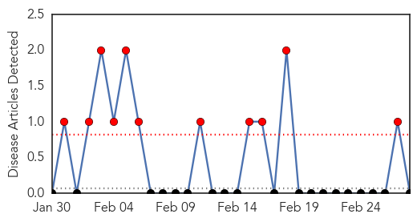
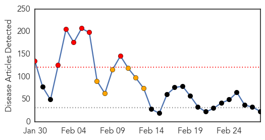
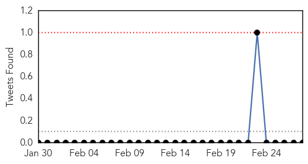
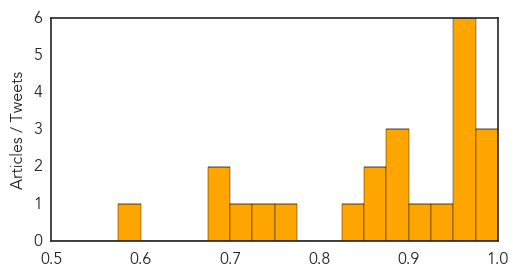

Yellow Fever
30-Day Web Trend
11 alerts, 0 warnings

30-Day Twitter Trend
0 alerts, 0 warnings

Article Locations

Article Confidences

Top Articles:
-
No articles found for Feb 28, 2015
Top Tweets:
-
No tweets found for Feb 28, 2015
Measles
30-Day Web Trend
7 alerts, 6 warnings

30-Day Twitter Trend
0 alerts, 0 warnings

Article Locations

Article Confidences
Top Articles:
- 0.987
- Measles Outbreak on Las Vegas Strip
- 0.976
- Doctors Express directors weigh in on measles vaccine
- 0.976
- Three new measles cases linked to Emeril’s staffer
- 0.975
- More measles cases in Lanaudière region of Quebec
- 0.975
- Sweden confirms measles case
- 0.975
- Sweden confirms measles case
- 0.967
- 4 measles cases linked to Las Vegas restaurant, health officials say
- 0.964
- Georgia measles scare over with no spread of the disease
- 0.958
- Top-Line Questions From Moms About MMR
- 0.938
- Measles victim dines at Berkeley's La Mediterranee; may have exposed others. Category
- 0.904
- 156 cases, possible exposure in Berkeley restaurant
- 0.899
- Toddler didn't have measles
- 0.882
- Haverhill schools guard against measles
- 0.877
- Philippines measles outbreak 2014: 58,010 cases, 110 deaths
- 0.869
- MMR vaccination, doing nothing is the more dangerous choice ~ Lake Superior News
- 0.858
- New Measles Cases Penetrate Vegas' MGM Grand Hotel
- 0.841
- Dana Hills High School
- 0.765
- Measles outbreak: 156 cases, possible exposure in Berkeley restaurant
- 0.729
- Measles outbreak spreads to Sweden - Radio Sweden
- 0.711
- Ask the doc
- 0.688
- 6 Students Kept From Riverside County School After Measles Scare « CBS Los Angeles
- 0.680
- Most question why children wouldn’t be vaccinated - TheAlpenaNews.com
- 0.576
- Bam Jam: Measles Hits Emeril's Nevada Outpost
Top Tweets:
-
No tweets found for Feb 28, 2015